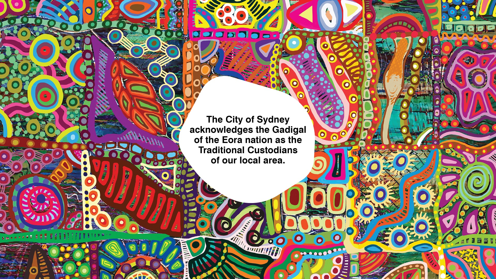

Live Working Session
This area is password-protected
Incorrect password
This area is password-protected
Incorrect password
City of Sydney · Australian Institute of Management · Live 1-Hour Session
One hour, hands-on. We build real admin tasks together — then turn them into repeatable workflows you can use from Monday.
 ChatGPT
ChatGPT Gemini
Gemini Claude
Claude Grok
Grok
Before we start
Your feedback from the workshop shaped this hour. Three things you asked for:
The hour
Quick poll · 20 seconds
Tried it once or twice, not sure where to start
Use it now and then for the odd task
It’s already part of how I work
No wrong answer. This is how I’ll pitch the next 50 minutes — and which lane to follow.
Part 1 · Foundations
Part 1 · Foundations
Part 2 · Build it live
No theory. We’ll build the best three together — pick the ones closest to your business. The fourth is in your take-home kit.
A customer message → a clear reply, the right questions, and next steps
Customer feedback → key themes and a few practical improvements
A client request → an itemised quote, a matching invoice and a send-ready email
Availability + hours → a roster with gaps flagged and shift messages drafted
Build A · Enquiry → response + booking
Build B · Feedback & reviews → insights
Build C · Quote, invoice & send
Build D · Staff availability → roster
Part 3 · Make it repeatable
You ask, it answers. Great for one task, one time.
The same steps, saved and reused. Same prompt, new input, every week.
It does the multi-step job for you — you stay in the loop and approve.
Most admin pain lives in step two: things you redo constantly. That’s where the time is.
Part 3 · Cowork, set up for real
Part 4 · Your move
Pick the one admin job that drains you most. Spend 20 minutes this week building a prompt for it. That’s the whole plan.
Take-home kit
Thank you. Take the kit, pick your one task, and start Monday.
Before you go
A quick scan, two minutes. Your feedback shapes the next session — just like this one was shaped by yours.
Coming up
Wednesday 23 July. Personas, brand voice, content and visuals — the marketing companion to today.
Expressions of interest are still open.